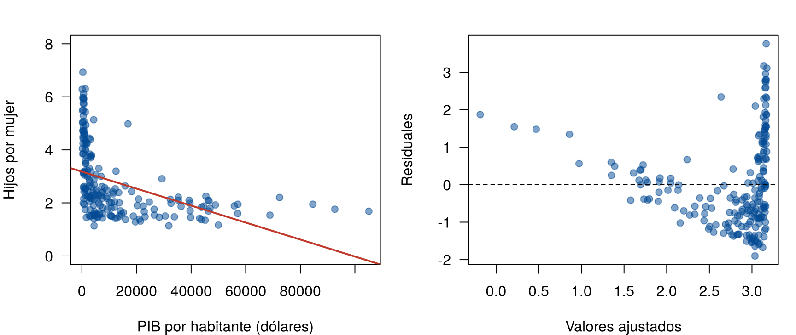
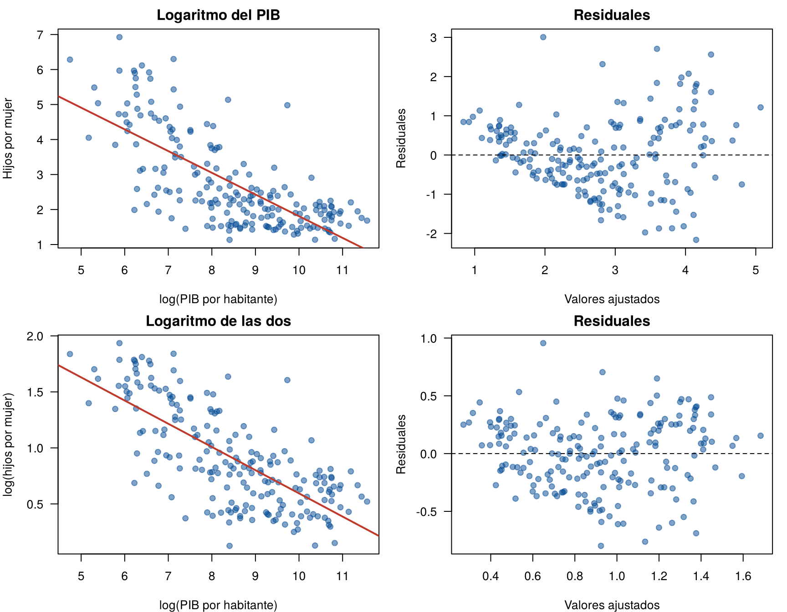
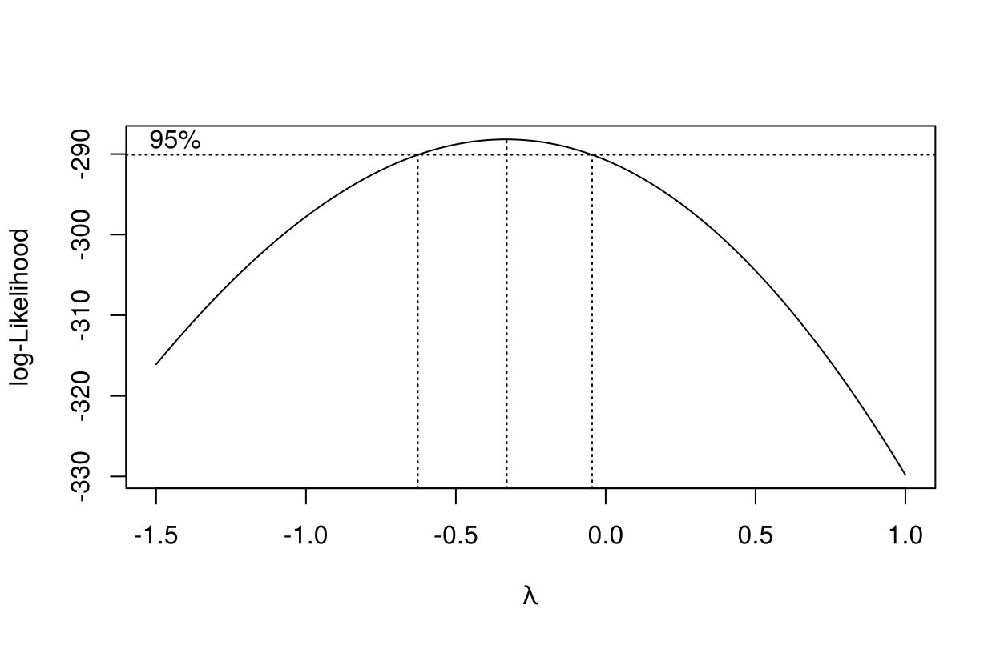
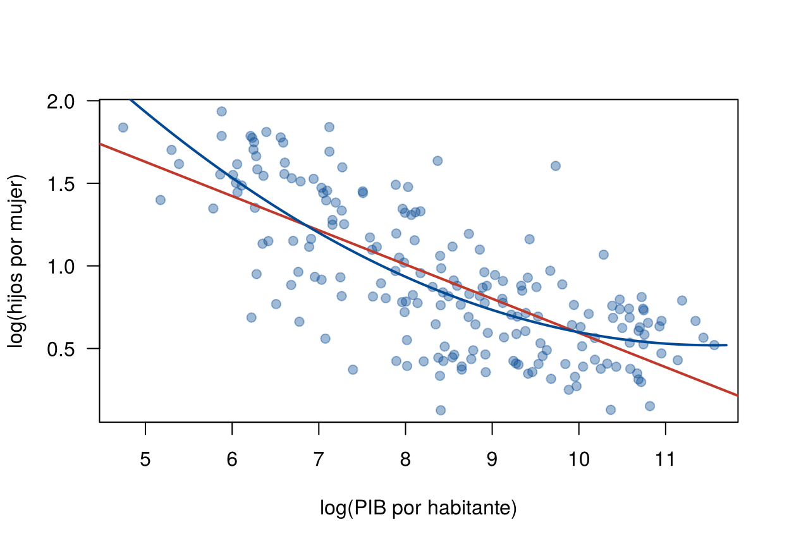
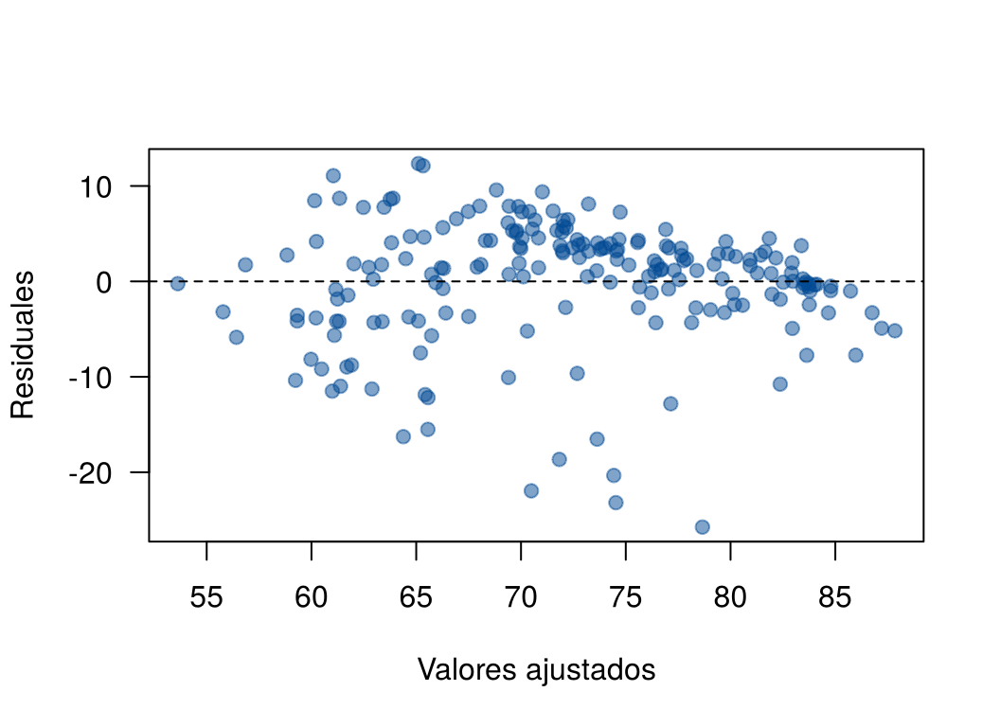

Cuando la revisión de los supuestos muestra una relación curva o una varianza que crece con la media, una de las soluciones más usadas es transformar las variables, casi siempre con el logaritmo. El modelo sigue siendo una recta, pero entre las variables transformadas.
Esta página muestra cómo elegir una transformación, cómo interpretar los coeficientes cuando hay logaritmos, cómo usar el método de Box-Cox y cómo volver a la escala original. También presenta los términos cuadráticos como otra forma de modelar una curva. Se usa el caso de la fecundidad y el PIB por habitante de la página Correlación de Spearman y Kendall. Los bloques de código se ejecutan en orden.
| Lo que se ve | Transformación usual |
|---|---|
| Relación curva, con \(x\) muy asimétrica (pocos valores muy grandes) | Logaritmo de \(x\) |
| La dispersión de \(y\) crece con su media (embudo) | Logaritmo de \(y\) (o raíz cuadrada si \(y\) es un conteo) |
| Los dos problemas a la vez | Logaritmo de las dos |
| \(y\) es una proporción entre 0 y 1 | Otros modelos (regresión logística o beta) |
El logaritmo solo se aplica a valores positivos. Sirve sobre todo para variables que se miden en escala multiplicativa, como ingresos, precios, poblaciones o concentraciones: en ellas importa más el cambio porcentual que el cambio absoluto.
La razón principal para transformar es la forma de la relación. Si después de transformar la varianza también se estabiliza, mejor. Transformar solo para que una prueba de normalidad no rechace no es una buena razón.
Los datos se descargan aquí:
paises.csv. Guarde el archivo en
la carpeta data de su proyecto de
RStudio.
paises <- na.omit(read.csv("data/paises.csv"))
m0 <- lm(fertilidad ~ pib_pc, data = paises)par(mfrow = c(1, 2), mar = c(4, 4, 2, 1))
plot(fertilidad ~ pib_pc, data = paises, pch = 19, col = "#034A9480", las = 1,
xlab = "PIB por habitante (dólares)", ylab = "Hijos por mujer", ylim = c(0, 8))
abline(m0, col = "#C0392B", lwd = 2)
plot(fitted(m0), residuals(m0), pch = 19, col = "#034A9480", las = 1,
xlab = "Valores ajustados", ylab = "Residuales")
abline(h = 0, lty = 2)
Fecundidad según el PIB por habitante: datos con la recta (izquierda) y residuales (derecha).
La recta no sigue los datos: la relación es curva y la dispersión es mucho mayor entre los países pobres. El PIB por habitante es muy asimétrico: la mayoría de los países tiene menos de 10 000 dólares y unos pocos más de 50 000.
Se prueba primero con el logaritmo del PIB y luego con el logaritmo de las dos variables:
m1 <- lm(fertilidad ~ log(pib_pc), data = paises)
m2 <- lm(log(fertilidad) ~ log(pib_pc), data = paises)par(mfrow = c(2, 2), mar = c(4, 4, 2, 1))
plot(fertilidad ~ log(pib_pc), data = paises, pch = 19, col = "#034A9480", las = 1,
xlab = "log(PIB por habitante)", ylab = "Hijos por mujer", main = "Logaritmo del PIB")
abline(m1, col = "#C0392B", lwd = 2)
plot(fitted(m1), residuals(m1), pch = 19, col = "#034A9480", las = 1,
xlab = "Valores ajustados", ylab = "Residuales", main = "Residuales")
abline(h = 0, lty = 2)
plot(log(fertilidad) ~ log(pib_pc), data = paises, pch = 19, col = "#034A9480", las = 1,
xlab = "log(PIB por habitante)", ylab = "log(hijos por mujer)", main = "Logaritmo de las dos")
abline(m2, col = "#C0392B", lwd = 2)
plot(fitted(m2), residuals(m2), pch = 19, col = "#034A9480", las = 1,
xlab = "Valores ajustados", ylab = "Residuales", main = "Residuales")
abline(h = 0, lty = 2)
Datos y residuales con logaritmo del PIB (arriba) y con logaritmo de las dos variables (abajo).
Con el logaritmo del PIB, la relación ya es casi recta, pero los residuales forman un embudo: la fecundidad varía más en los países pobres. Al tomar también el logaritmo de la fecundidad, la franja de residuales es más pareja. La prueba de Breusch-Pagan (Revisión de los supuestos) lo confirma:
library(lmtest)
c(sin_transformar = bptest(m0)$p.value,
log_pib = bptest(m1)$p.value,
log_las_dos = bptest(m2)$p.value)sin_transformar.BP log_pib.BP log_las_dos.BP
0.002647619570 0.000004110897 0.081966624635 El logaritmo convierte los cambios porcentuales en cambios absolutos. Por eso la interpretación cambia según qué variable está transformada:
| Modelo | Interpretación de \(\beta_1\) | Fórmula exacta |
|---|---|---|
| \(y = \beta_0 + \beta_1 x\) | \(x\) aumenta 1 unidad: \(y\) cambia \(\beta_1\) unidades | |
| \(\log y = \beta_0 + \beta_1 x\) | \(x\) aumenta 1 unidad: \(y\) cambia cerca de \(100\,\beta_1\) % | \(100(e^{\beta_1} - 1)\) % |
| \(y = \beta_0 + \beta_1 \log x\) | \(x\) aumenta 1 %: \(y\) cambia cerca de \(\beta_1 / 100\) unidades | Con un aumento de 10 %: \(\beta_1 \log(1.10)\) |
| \(\log y = \beta_0 + \beta_1 \log x\) | \(x\) aumenta 1 %: \(y\) cambia cerca de \(\beta_1\) % (elasticidad) | Con un aumento de 10 %: \(100(1.10^{\beta_1} - 1)\) % |
Las aproximaciones funcionan bien cuando \(\beta_1\) es pequeño (menor que 0.2 en valor absoluto). En el modelo con logaritmo en las dos variables:
coef(m2)(Intercept) log(pib_pc)
2.6655073 -0.2071498 b1 <- coef(m2)[2]
100 * (1.10^b1 - 1) # cambio porcentual en la fecundidad si el PIB es 10 % mayorlog(pib_pc)
-1.954986 100 * (2^b1 - 1) # si el PIB es el doblelog(pib_pc)
-13.37531 Entre países cuyo PIB por habitante difiere en 10 %, la fecundidad es, en promedio, 2 % menor en el más rico. Entre un país y otro con el doble de PIB, la fecundidad es 13.4 % menor. Como en todo el modelo, es una asociación entre países, no el efecto de que un país se enriquezca.
En el modelo con logaritmo solo del PIB (m1), la
pendiente es -0.62: si el PIB es 10 % mayor, la fecundidad es menor en
\(-0.62 \times \log(1.10) = -0.059\)
hijos por mujer.
El método de Box-Cox busca, entre las transformaciones de potencia de \(y\), la que mejor cumple los supuestos del modelo:
\[ y^{(\lambda)} = \begin{cases} \dfrac{y^\lambda - 1}{\lambda} & \lambda \neq 0 \\[2mm] \log y & \lambda = 0 \end{cases} \]
| \(\lambda\) | Transformación |
|---|---|
| 1 | Ninguna |
| 0.5 | Raíz cuadrada |
| 0 | Logaritmo |
| −0.5 | \(1/\sqrt{y}\) |
| −1 | Recíproco, \(1/y\) |
Para cada \(\lambda\) se ajusta el
modelo y se calcula su verosimilitud; se elige el \(\lambda\) que la hace máxima. La función
boxcox() del paquete MASS, que viene instalado
con R, grafica el perfil de
verosimilitud con su intervalo de confianza del 95 %. Se aplica
al modelo que ya tiene el logaritmo del PIB, porque Box-Cox solo
transforma \(y\):
library(MASS)
bc <- boxcox(m1, lambda = seq(-1.5, 1, by = 0.01), las = 1)
Perfil de verosimilitud de Box-Cox para la fecundidad. Las líneas verticales punteadas marcan el intervalo de confianza del 95 %.
lambda_max <- bc$x[which.max(bc$y)]
ic_lambda <- range(bc$x[bc$y > max(bc$y) - qchisq(0.95, 1) / 2])
c(lambda = lambda_max, inferior = ic_lambda[1], superior = ic_lambda[2]) lambda inferior superior
-0.33 -0.62 -0.05 El máximo está en \(\hat{\lambda} = -0.33\), con un intervalo de -0.62 a -0.05. ¿Qué transformación usar?
Se comparan los residuales de las dos opciones:
m_raiz <- lm(I(1 / sqrt(fertilidad)) ~ log(pib_pc), data = paises)
data.frame(transformacion = c("log(y)", "1/sqrt(y)"),
breusch_pagan = c(bptest(m2)$p.value, bptest(m_raiz)$p.value),
shapiro = c(shapiro.test(rstandard(m2))$p.value, shapiro.test(rstandard(m_raiz))$p.value)) transformacion breusch_pagan shapiro
1 log(y) 0.08196662 0.214453663
2 1/sqrt(y) 0.97376515 0.002853609\(1/\sqrt{y}\) estabiliza mejor la varianza, pero sus residuales se alejan más de la normal. El logaritmo da un modelo aceptable en los dos sentidos y se interpreta en porcentajes. En este caso se prefiere el logaritmo. Box-Cox es una guía, no una regla: la decisión final combina el perfil, los residuales y la interpretación, y se reporta.
El modelo con logaritmos predice \(\log y\). Para dar la predicción en hijos por mujer se aplica la exponencial. Para Colombia (PIB por habitante de 6 222.8 dólares):
colombia <- data.frame(pib_pc = 6222.8)
pred_log <- predict(m2, colombia, interval = "prediction")
pred_log fit lwr upr
1 0.8558519 0.2486375 1.463066exp(pred_log) fit lwr upr
1 2.353378 1.282277 4.319184Hay que tener cuidado con lo que significa:
c(mediana = exp(pred_log[1, "fit"]), media = exp(pred_log[1, "fit"] + sigma(m2)^2 / 2)) mediana media
2.353378 2.467019 Con 95 % de confianza, un país con el PIB de Colombia tendría entre 1.3 y 4.3 hijos por mujer. Colombia tenía 2.293.
Ninguna transformación es perfecta. En el modelo con logaritmos aún queda algo de curvatura: al agregar el cuadrado de \(\log x\), el término es significativo.
m_cuad <- lm(log(fertilidad) ~ log(pib_pc) + I(log(pib_pc)^2), data = paises)
anova(m2, m_cuad)Analysis of Variance Table
Model 1: log(fertilidad) ~ log(pib_pc)
Model 2: log(fertilidad) ~ log(pib_pc) + I(log(pib_pc)^2)
Res.Df RSS Df Sum of Sq F Pr(>F)
1 197 18.581
2 196 17.204 1 1.3768 15.686 0.0001046 ***
---
Signif. codes: 0 '***' 0.001 '**' 0.01 '*' 0.05 '.' 0.1 ' ' 1coef(m_cuad) (Intercept) log(pib_pc) I(log(pib_pc)^2)
4.91167260 -0.76072043 0.03293902 Un término cuadrático permite que la pendiente
cambie con \(x\). El modelo sigue
siendo lineal en los coeficientes, y se ajusta con lm().
Aquí la curva indica que la fecundidad baja más rápido entre los países
pobres y se aplana entre los ricos.
plot(log(fertilidad) ~ log(pib_pc), data = paises, pch = 19, col = "#034A9460", las = 1,
xlab = "log(PIB por habitante)", ylab = "log(hijos por mujer)")
abline(m2, col = "#C0392B", lwd = 2)
malla <- data.frame(pib_pc = exp(seq(4.5, 11.7, by = 0.05)))
lines(log(malla$pib_pc), predict(m_cuad, malla), col = "#034A94", lwd = 2)
Modelo con logaritmos: recta (rojo) y curva con término cuadrático (azul).
Precauciones con los términos cuadráticos:
| Problema | Causa | Solución |
|---|---|---|
| Usar \(\hat{\lambda}\) de Box-Cox con todos sus decimales | Se toma el máximo como valor exacto | Elegir un valor interpretable dentro del intervalo |
| Interpretar la pendiente con logaritmos como en el modelo sin transformar | Se olvida la escala | Hablar de cambios porcentuales (tabla de esta página) |
| Decir que \(e^{\hat{y}}\) es la media de \(y\) | La exponencial no conserva promedios | Es la mediana; la media requiere un ajuste |
| Aplicar el logaritmo a una variable con ceros | \(\log 0\) no existe | Revisar por qué hay ceros; sumar una constante cambia los resultados y debe justificarse |
| Transformar para que una prueba no rechace | Se pierde la razón del modelo | Transformar por la forma de la relación y revisar los residuales |
| Interpretar por separado los coeficientes de \(x\) y \(x^2\) | La pendiente cambia con \(x\) | Graficar la curva ajustada |
Con la pendiente del modelo m2, ¿cuánto menor es la
fecundidad promedio en un país con el triple del PIB por habitante de
otro?
100 * (3^coef(m2)[2] - 1)log(pib_pc)
-20.35391 Cerca de 20 % menor. Se usa la fórmula exacta \(100(3^{\beta_1} - 1)\) porque un triple no es un cambio pequeño.
Ajuste la esperanza de vida de las mujeres según el logaritmo del PIB por habitante. Interprete la pendiente para un PIB 10 % mayor y revise los residuales.
m_vida <- lm(vida_mujer ~ log(pib_pc), data = paises)
coef(m_vida)(Intercept) log(pib_pc)
29.814802 5.018835 coef(m_vida)[2] * log(1.10)log(pib_pc)
0.4783461 plot(fitted(m_vida), residuals(m_vida), pch = 19, col = "#034A9480", las = 1,
xlab = "Valores ajustados", ylab = "Residuales")
abline(h = 0, lty = 2)
Residuales del modelo de esperanza de vida.
Entre países cuyo PIB difiere en 10 %, la esperanza de vida de las mujeres es en promedio cerca de medio año mayor en el más rico. Los residuales muestran varios países pobres con una esperanza de vida mucho menor que la esperada: la distribución de los residuales es asimétrica. Hay otras variables (conflictos, epidemias) que el PIB no recoge.
Para un país con un PIB por habitante de 1 000 dólares, calcule con
el modelo m2 la mediana y la media estimadas de la
fecundidad. ¿Por qué la media es mayor?
pred_1000 <- predict(m2, data.frame(pib_pc = 1000))
c(mediana = exp(pred_1000), media = exp(pred_1000 + sigma(m2)^2 / 2))mediana.1 media.1
3.436891 3.602853 En la escala original, la distribución de la fecundidad es asimétrica a la derecha: algunos países tienen fecundidades mucho mayores que la mediana, y eso sube la media.
Última revisión: 9 de noviembre de 2026.